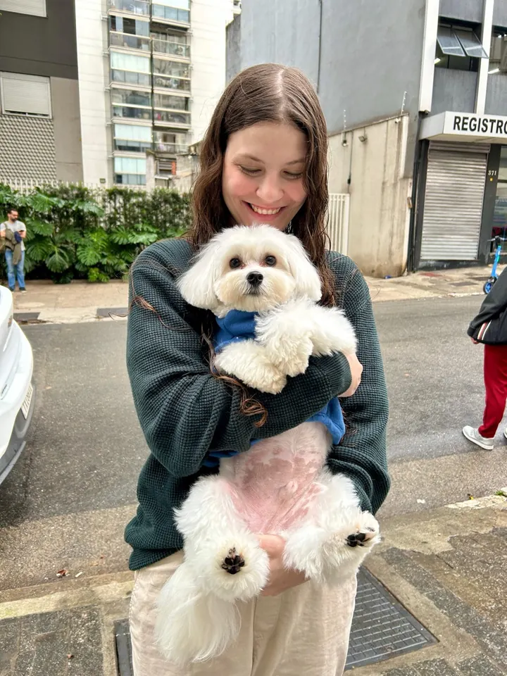
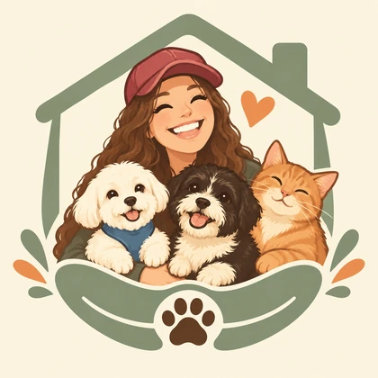
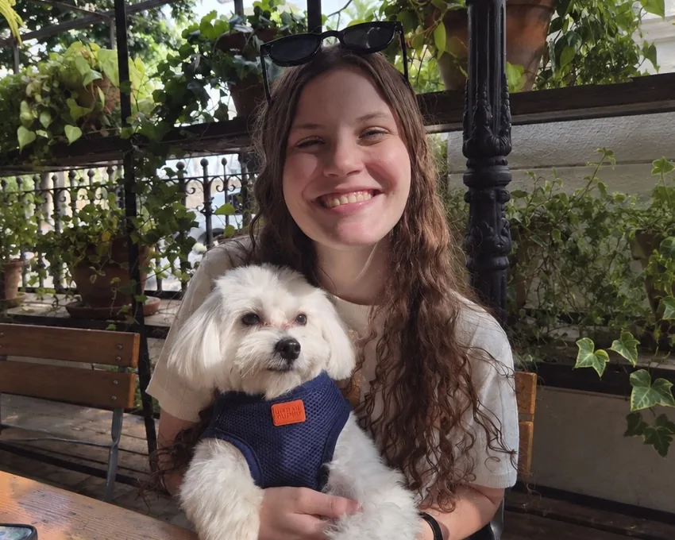
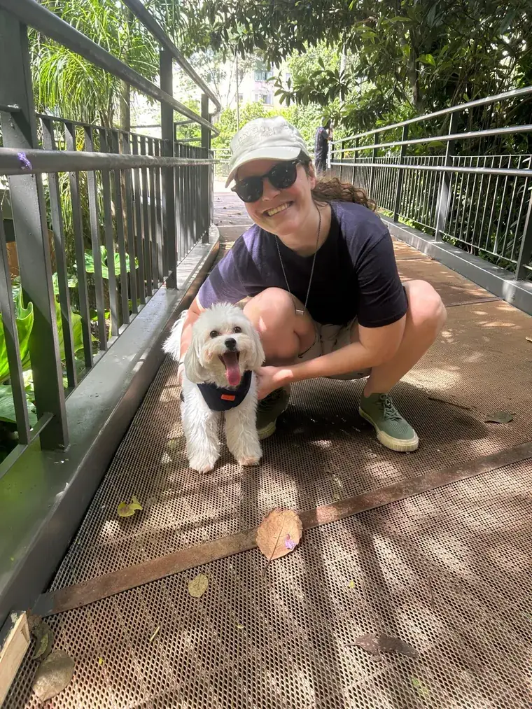
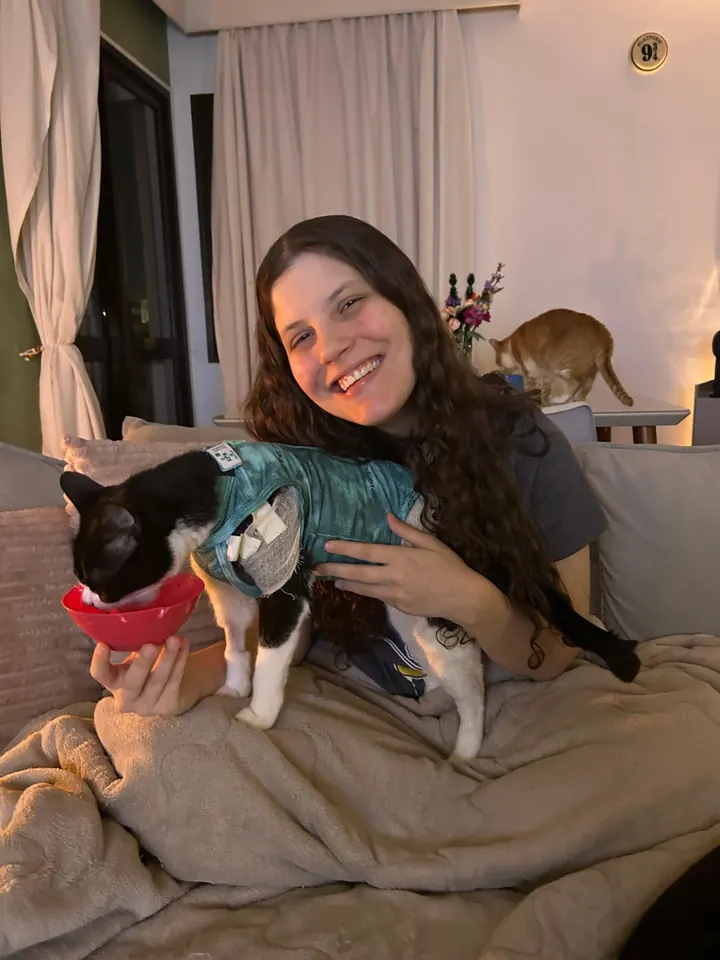
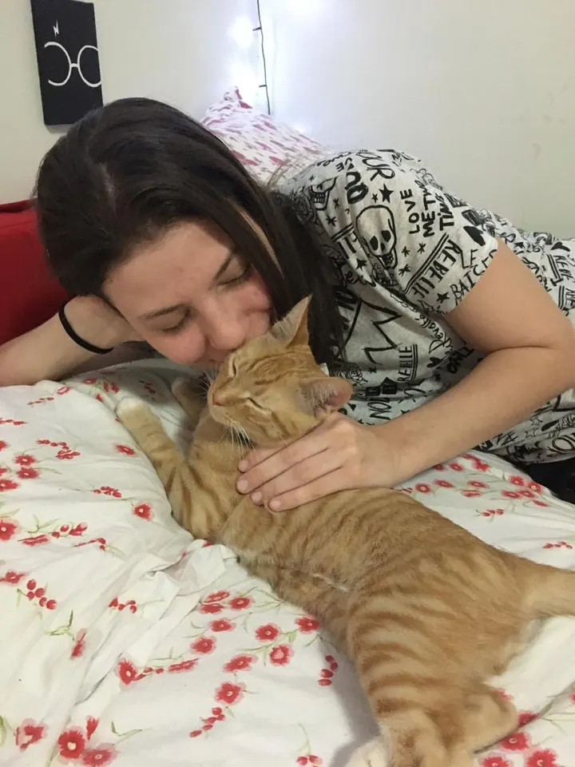
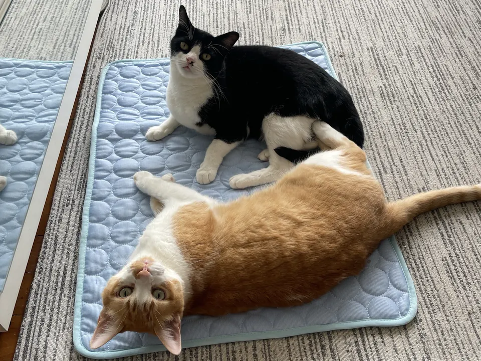
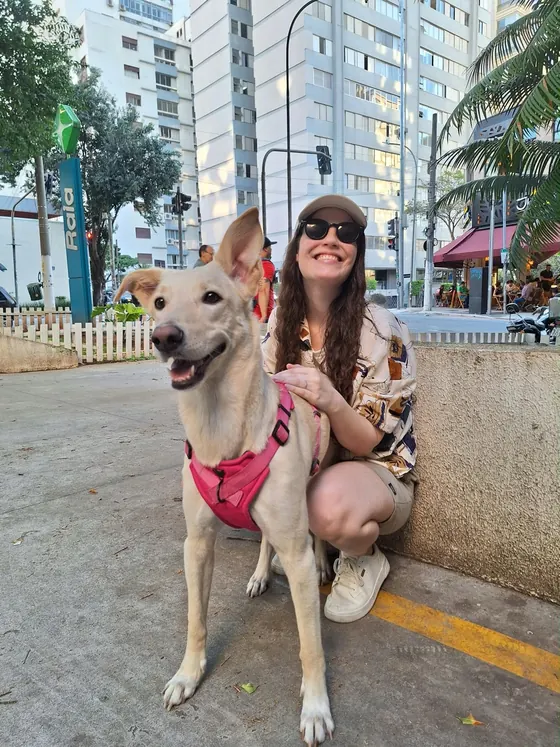
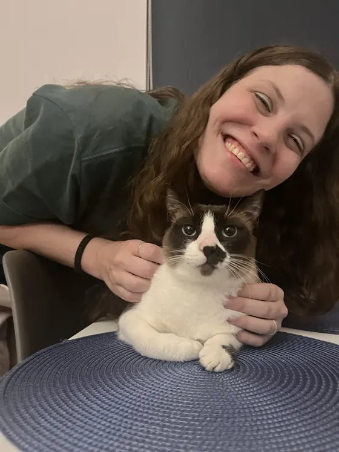

Visitas na casa
A Giu vai até a casa do seu pet, cuida da rotina dele e faz companhia. Serve para cães e gatos.

Petsitter Giu RossiVisitas na casa do seu pet, passeios e remédios no centro de São Paulo. Você recebe fotos e vídeos de cada visita.
Fotos e vídeos de cada visita
Videochamada gratuita antes de começar
Chamar a Giu no WhatsApp“cuidou muito bem da Maya, minha nenê de quatro patas”

Oi! Eu sou a Giulia 🐾💚
Tenho três filhos de quatro patas que são meus maiores amores: dois cachorros que vivem brincando e um gatinho que ama dormir.
Sempre cresci rodeada de animais, por isso brincar, alimentar, cuidar e fazer muitoooo carinho é parte da minha rotina 🥰
Vou tratar seu pet com muito respeito, amor e como se fosse parte da família! E pode deixar que você vai receber updates e muitas fotos do seu nenê durante os meus cuidados, para matar um pouco da saudade 😉

A Giu vai até a casa do seu pet, cuida da rotina dele e faz companhia. Serve para cães e gatos.

Passeios individuais ou em dupla, no horário combinado. A Giu usa comandos básicos como sentar, ficar e junto.

A Giu administra medicamentos orais no horário e do jeito que você explicar, e segue os cuidados que seu pet precisa.

Depois de cada visita, você recebe fotos e vídeos para ver como seu pet está.
O valor depende de quantas visitas por dia, em quais dias e de quantos pets. Chame a Giu no WhatsApp com as datas e ela responde com o valor.

Você combina com a Giu como prefere fazer. O mais comum é deixar a chave na portaria e autorizar a Giu a retirá-la nos dias das visitas. Ela devolve a chave ao final da visita.
Depois de cada visita, a Giu manda uma atualização. Você viaja ou trabalha sabendo como seu pet está.

Giulia foi muito simpática e atenciosa e cuidou muito bem da Maya, minha nenê de quatro patas. Ela me mandou várias fotos e vídeos durante a visita e se certificou de deixar tudo limpo quando foi embora. Com certeza vou chama-lá de novo quando precisar. Super recomendo!
Camila, Santa Cecília

Fiz a videochamada antes e já fiquei tranquila. Minha gata Lara foi muito bem cuidada.
Isabella, Higienópolis · Exemplo
Região central de São Paulo. Se o seu bairro não está na lista, chame a Giu no WhatsApp para ela confirmar se atende.
Pode. Antes de começar, vocês fazem uma videochamada gratuita. Você explica o que seu pet precisa, tira as dúvidas e conhece a Giu.
O valor depende de quantas visitas por dia, em quais dias e de quantos pets. Chame a Giu no WhatsApp com as datas e ela responde com o valor.
Não. A Giu faz a administração básica de medicamentos orais, no horário e do jeito que você combinar. Na videochamada você explica a rotina e os cuidados especiais.
Você combina com a Giu como prefere fazer. O mais comum é deixar a chave na portaria e autorizar a Giu a retirá-la nos dias das visitas. Ela devolve a chave ao final da visita.
Sim. A cada visita você recebe uma atualização com fotos e vídeos.
Cuida dos dois. Os passeios são só para cachorros. Os gatos recebem a visita na casa.
Preencha o que souber. O site monta a mensagem e você envia pelo WhatsApp.